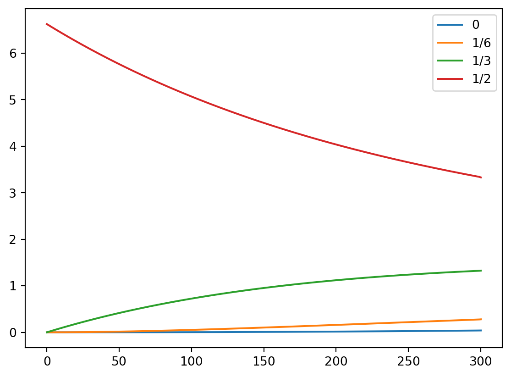
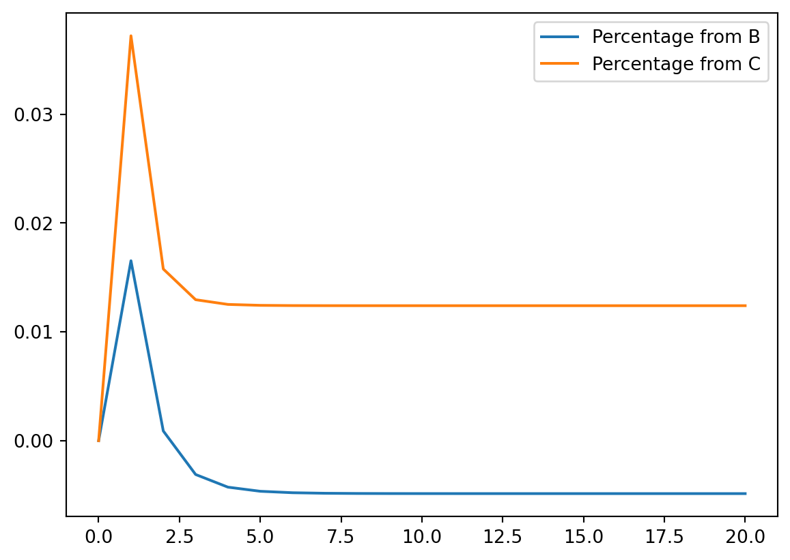
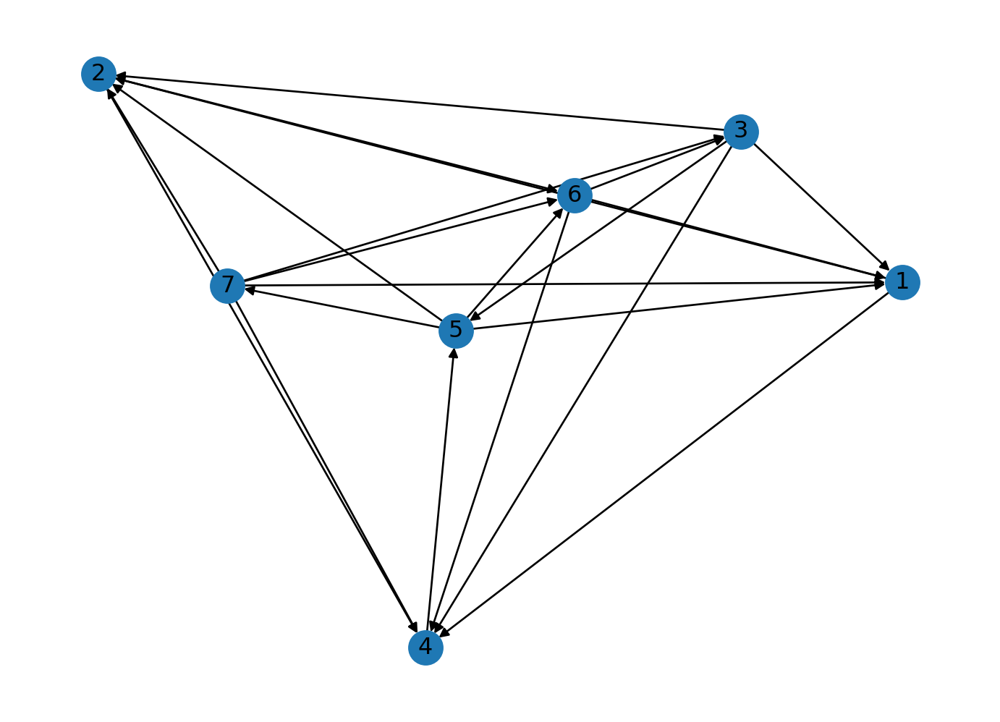

Code
import sympy as sym
import numpy as np
import pandas as pd
sb = sym.Symbolimport sympy as sym
import numpy as np
import pandas as pd
sb = sym.Symbol
N=7
M = sym.zeros(N)
for i in range(N):
if (i>0):
M[i-1,i]=1
M[i,i]=-2
if (i<N-1):
M[i+1,i]=1
# M[0, i] = 0
# M[6, i] = 0
# M[i, 0] = 0
# M[i, 6] = 0
# M[5, 6] = 0
M\(\displaystyle \left[\begin{matrix}-2 & 1 & 0 & 0 & 0 & 0 & 0\\1 & -2 & 1 & 0 & 0 & 0 & 0\\0 & 1 & -2 & 1 & 0 & 0 & 0\\0 & 0 & 1 & -2 & 1 & 0 & 0\\0 & 0 & 0 & 1 & -2 & 1 & 0\\0 & 0 & 0 & 0 & 1 & -2 & 1\\0 & 0 & 0 & 0 & 0 & 1 & -2\end{matrix}\right]\)
t270 = sym.Matrix([0.0, 0.051, 1.21, 3.48, 1.21, 0.051, 0.0])
# t270 = sym.Matrix([0.051, 1.21, 3.48, 1.21, 0.051])t240 = sym.Matrix([0.0, 0.032, 1.23, 3.69, 1.23, 0.032, 0.0])Going forward from 240 to 270
Dh2 = 0.00004 * 36
current = t240
for step in range(240, 271):
next_step = current + M*current * Dh2
if step % 10 == 0:
print(step, current)
print('\n')
current = next_step240 Matrix([[0], [0.0320000000000000], [1.23000000000000], [3.69000000000000], [1.23000000000000], [0.0320000000000000], [0]])
250 Matrix([[0.000562471243392380], [0.0486924553785851], [1.24759546552771], [3.62029245984376], [1.24759546552771], [0.0486924553785851], [0.000562471243392380]])
260 Matrix([[0.00134480689310895], [0.0651618382102242], [1.26395165777253], [3.55305081122375], [1.26395165777253], [0.0651618382102242], [0.00134480689310895]])
270 Matrix([[0.00233753410690556], [0.0814003695987503], [1.27913496114619], [3.48817057984740], [1.27913496114619], [0.0814003695987503], [0.00233753410690556]])
Backwards from 270 to 240
current.shape(7, 1)Dh2 = 0.00004 * 36
current = t270
for step in range(270, -1, -1):
prev_step = (sym.eye(current.shape[0]) + M* Dh2).inv()*current
if step % 40 == 0:
print(step, current)
print('\n')
current = sym.Matrix(np.maximum(prev_step, 0))
print(step, current)
init_state = current240 Matrix([[0], [0.00212689488945927], [1.15621985395050], [3.68754809461451], [1.15621985395048], [0.00212689488945964], [0]])
200 Matrix([[9.47143103797723e-5], [0], [1.06279149507993], [4.00254036435968], [1.06279149507989], [0], [9.47143103797697e-5]])
160 Matrix([[0.000194835210686209], [0], [0.937128531983600], [4.36938971176471], [0.937128531983537], [0], [0.000194835210686203]])
120 Matrix([[0.000294410849364334], [0], [0.771792042493187], [4.79882186271244], [0.771792042493099], [0], [0.000294410849364323]])
80 Matrix([[0.000389481701770366], [0], [0.557712169649991], [5.30388057840637], [0.557712169649879], [0], [0.000389481701770348]])
40 Matrix([[0.000474717247747708], [0], [0.283827585787304], [5.90043223273764], [0.283827585787171], [0], [0.000474717247747682]])
0 Matrix([[0.000543077482862398], [8.59904987581519e-5], [0], [6.60726130357147], [0], [8.59904987583709e-5], [0.000543077482862360]])
0 Matrix([[0.000544502698002186], [9.92726600399977e-5], [0], [6.62637281796703], [0], [9.92726600402174e-5], [0.000544502698002148]])import warnings
warnings.filterwarnings("ignore")
current = init_state
plot_df = pd.DataFrame([], columns=['0', '1/6', '1/3', '1/2'], dtype=np.float64)
for step in range(0, 301):
plot_df.loc[step] = current[:4]
next_step = current + M*current * Dh2
if step==0 or step ==210 or step == 300:
print(step, current)
print('\n')
current = next_step
plot_df.loc[step] = current[:4]0 Matrix([[0.000544502698002186], [9.92726600399977e-5], [0], [6.62637281796703], [0], [9.92726600402174e-5], [0.000544502698002148]])
210 Matrix([[0.0171961512440258], [0.170658419488325], [1.14714251754697], [3.95457410693089], [1.14714251754697], [0.170658419488326], [0.0171961512440258]])
300 Matrix([[0.0390928199813232], [0.277467835539847], [1.32429430615571], [3.33577189136941], [1.32429430615571], [0.277467835539847], [0.0390928199813232]])
plot_df = plot_df.astype(np.float_)plot_df.plot(kind='line')
It is expected that the center curve looks like an logarithmic decay, the 1/3 curve looks like a logarithmic increase which I suppose will decrease at the point. Using Linear Algebra does seem like a much easier approach than the actual Physics of computing the diffusion constant as well as the intial concentration.
import sympy as sym
sb = sym.Symbol
import pandas as pdM = sym.Matrix([[.5, .2, .3],[.2, .6, .1], [.3, .2, .6]])
M\(\displaystyle \left[\begin{matrix}0.5 & 0.2 & 0.3\\0.2 & 0.6 & 0.1\\0.3 & 0.2 & 0.6\end{matrix}\right]\)
3 years later
M**3 * sym.Matrix([0.33333, 0.33333, 0.33333])\(\displaystyle \left[\begin{matrix}0.33899661\\0.27533058\\0.38566281\end{matrix}\right]\)
first campaign
Mc1 = sym.Matrix([[.5, .32, .3],[.2, .48, .1], [.3, .2, .6]])
Mc1\(\displaystyle \left[\begin{matrix}0.5 & 0.32 & 0.3\\0.2 & 0.48 & 0.1\\0.3 & 0.2 & 0.6\end{matrix}\right]\)
Mc1**50 * sym.Matrix([0.33333, 0.33333, 0.33333])\(\displaystyle \left[\begin{matrix}0.380562995951417\\0.22266983805668\\0.396757165991903\end{matrix}\right]\)
Mc1**50 * sym.Matrix([0, 1, 0])\(\displaystyle \left[\begin{matrix}0.380566801619433\\0.222672064777328\\0.396761133603239\end{matrix}\right]\)
Mc2 = sym.Matrix([[.5, .32, .3+.6*.2],[.2, .48, .1], [.3, .2, .6*.8]])
Mc2\(\displaystyle \left[\begin{matrix}0.5 & 0.32 & 0.42\\0.2 & 0.48 & 0.1\\0.3 & 0.2 & 0.48\end{matrix}\right]\)
Mc2**50 * sym.Matrix([0.33333, 0.33333, 0.33333])\(\displaystyle \left[\begin{matrix}0.431422288077188\\0.230872949689869\\0.337694762232943\end{matrix}\right]\)
Mc2**50 * sym.Matrix([0, 1, 0])\(\displaystyle \left[\begin{matrix}0.431426602343211\\0.230875258442453\\0.337698139214335\end{matrix}\right]\)
It is better to run campaign 2 as the steady state vector for campaign 2 is 43% vs 38% for campaign 1. It does not matter what the starting state is the end state after many iterations would be the same. As such the second campaign has insurance company A with a higher market share.
Below is the chart for the net gain our company A gains from either company B for marketing campaign 1 or company C for marketing campaign 2 for each subsequent iteration.
Implicit assumption of this model is that the effectiveness of each marketing campaign in driving consumer behavior remains constant across each time period. This is most likely not the case in reality. In either case though it looks like marketing campaign 2 is the better campaign unless company B has a lot more customers than company C in the initial period.
c1_state = sym.Matrix([0.33333, 0.33333, 0.33333])
c2_state = sym.Matrix([0.33333, 0.33333, 0.33333])
gains = pd.DataFrame([], columns=['Percentage from B', 'Percentage from C'])
gain_from_b = 0
gain_from_c = 0
for step in range(21):
gains.loc[int(step)] = (gain_from_b, gain_from_c)
next_state_c1 = Mc1 * c1_state
next_state_c2 = Mc2 * c2_state
gain_from_b = next_state_c1[1] * Mc1[0, 1] - c1_state[0] * Mc1[1, 0]
gain_from_c = next_state_c2[2] * Mc2[0, 2] - c2_state[0] * Mc1[2, 0]
c1_state = next_state_c1
c2_state = next_state_c2gains = gains.astype(float)gains.plot(kind='line')
import sympy as sym
import numpy as np
import pandas as pd
import networkx as nx
sb = sym.Symbol
sm = sym.MatrixG = nx.DiGraph()
G.add_nodes_from([1, 2, 3, 4, 5, 6, 7])
G.add_edges_from([(1, 2), (7, 3), (2, 4), (4, 5), (3, 2), (5, 1), (6, 1), (3, 1), (7, 2), (2, 6), (3, 4), (7, 4)
, (5, 7), (6, 4), (3, 5), (5, 6), (7, 1), (5, 2), (7, 6), (1, 4), (6, 3)])nx.draw(G, with_labels=True)
adj_mat = nx.to_numpy_array(G)
adj_matarray([[0., 1., 0., 1., 0., 0., 0.],
[0., 0., 0., 1., 0., 1., 0.],
[1., 1., 0., 1., 1., 0., 0.],
[0., 0., 0., 0., 1., 0., 0.],
[1., 1., 0., 0., 0., 1., 1.],
[1., 0., 1., 1., 0., 0., 0.],
[1., 1., 1., 1., 0., 1., 0.]])wins = adj_mat.sum(axis=1)
winsarray([2., 2., 4., 1., 4., 3., 5.])losses = adj_mat.sum(axis=0)
lossesarray([4., 4., 2., 5., 2., 3., 1.])team = pd.DataFrame({'wins': wins, 'losses': losses}, index=range(1, 8))
team.sort_values(['wins', 'losses'], ascending=[False, True])| wins | losses | |
|---|---|---|
| 7 | 5.0 | 1.0 |
| 3 | 4.0 | 2.0 |
| 5 | 4.0 | 2.0 |
| 6 | 3.0 | 3.0 |
| 1 | 2.0 | 4.0 |
| 2 | 2.0 | 4.0 |
| 4 | 1.0 | 5.0 |
power_rank = (adj_mat + adj_mat**2).sum(axis=1)
pd.Series(power_rank, index=range(1, 8)).sort_values(ascending=False)7 10.0
3 8.0
5 8.0
6 6.0
1 4.0
2 4.0
4 2.0
dtype: float64col_sums = adj_mat.sum(axis=0)
P = np.zeros(adj_mat.shape)
for i in range(adj_mat.shape[0]):
P[i, :] = adj_mat[i, :] / col_sums
pd.DataFrame(P)| 0 | 1 | 2 | 3 | 4 | 5 | 6 | |
|---|---|---|---|---|---|---|---|
| 0 | 0.00 | 0.25 | 0.0 | 0.2 | 0.0 | 0.000000 | 0.0 |
| 1 | 0.00 | 0.00 | 0.0 | 0.2 | 0.0 | 0.333333 | 0.0 |
| 2 | 0.25 | 0.25 | 0.0 | 0.2 | 0.5 | 0.000000 | 0.0 |
| 3 | 0.00 | 0.00 | 0.0 | 0.0 | 0.5 | 0.000000 | 0.0 |
| 4 | 0.25 | 0.25 | 0.0 | 0.0 | 0.0 | 0.333333 | 1.0 |
| 5 | 0.25 | 0.00 | 0.5 | 0.2 | 0.0 | 0.000000 | 0.0 |
| 6 | 0.25 | 0.25 | 0.5 | 0.2 | 0.0 | 0.333333 | 0.0 |
alpha = 0.85
v = sym.ones(adj_mat.shape[0])[:, 0] / adj_mat.shape[0]
v\(\displaystyle \left[\begin{matrix}\frac{1}{7}\\\frac{1}{7}\\\frac{1}{7}\\\frac{1}{7}\\\frac{1}{7}\\\frac{1}{7}\\\frac{1}{7}\end{matrix}\right]\)
pg_mat = (sym.eye(P.shape[0]) - alpha * P)
pg_mat\(\displaystyle \left[\begin{matrix}1.0 & -0.2125 & 0 & -0.17 & 0 & 0 & 0\\0 & 1.0 & 0 & -0.17 & 0 & -0.283333333333333 & 0\\-0.2125 & -0.2125 & 1.0 & -0.17 & -0.425 & 0 & 0\\0 & 0 & 0 & 1.0 & -0.425 & 0 & 0\\-0.2125 & -0.2125 & 0 & 0 & 1.0 & -0.283333333333333 & -0.85\\-0.2125 & 0 & -0.425 & -0.17 & 0 & 1.0 & 0\\-0.2125 & -0.2125 & -0.425 & -0.17 & 0 & -0.283333333333333 & 1.0\end{matrix}\right]\)
pd.Series(list(pg_mat.gauss_jordan_solve(v* (1-alpha))[0]), index=range(1, 8))1 0.0596673237707704
2 0.0796658079275577
3 0.176269636041093
4 0.125351577397605
5 0.244524719927139
6 0.130332241204918
7 0.184188693730917
dtype: objectGw = nx.DiGraph()
Gw.add_nodes_from([1, 2, 3, 4, 5, 6, 7])
Gw.add_weighted_edges_from([(1, 2, 4), (7, 3, 8), (2, 4, 7), (4, 5, 3), (3, 2, 7), (5, 1, 7), (6, 1, 23)
, (3, 1, 15), (7, 2, 6), (2, 6, 18), (3, 4, 13), (7, 4, 14)
, (5, 7, 7), (6, 4, 13), (3, 5, 7), (5, 6, 18), (7, 1, 45), (5, 2, 10), (7, 6, 19), (1, 4, 13), (6, 3, 13)])
adj_matw = nx.to_numpy_array(Gw)
adj_matwarray([[ 0., 4., 0., 13., 0., 0., 0.],
[ 0., 0., 0., 7., 0., 18., 0.],
[15., 7., 0., 13., 7., 0., 0.],
[ 0., 0., 0., 0., 3., 0., 0.],
[ 7., 10., 0., 0., 0., 18., 7.],
[23., 0., 13., 13., 0., 0., 0.],
[45., 6., 8., 14., 0., 19., 0.]])pd.Series((adj_matw + adj_matw**2).sum(axis=1), index=range(1, 8))1 202.0
2 398.0
3 534.0
4 12.0
5 564.0
6 916.0
7 2774.0
dtype: float64